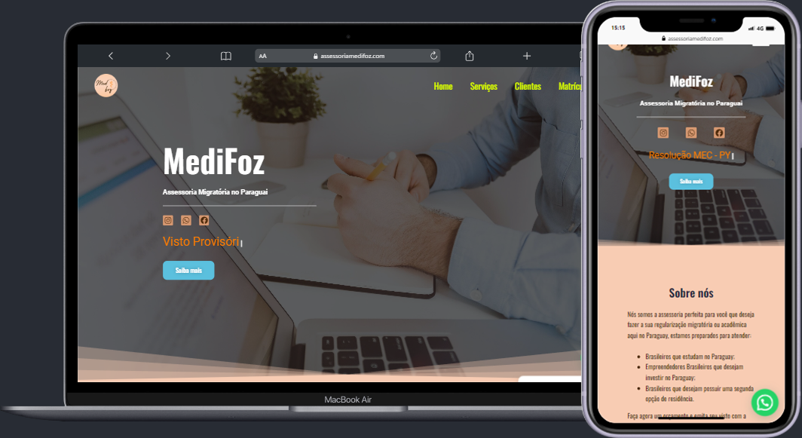
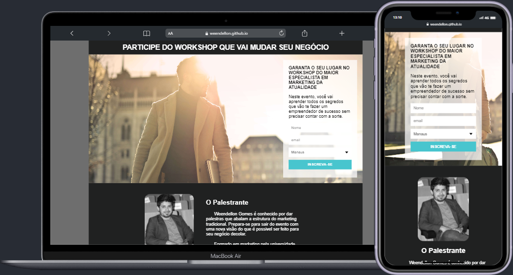
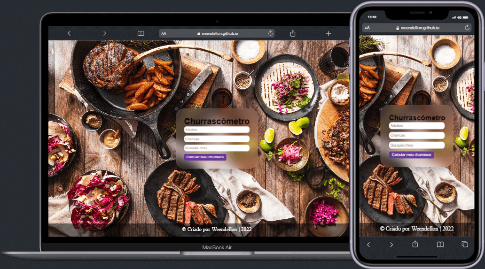

Meu primeiro projeto real. MediFoz é um Site de Assessoria, desenvolvido em Wordpress! com páginas de ação de chamadas via Whatsapp para impulsionar os negocios da assessoria.

Historia dos Games
O site História dos Games foi um dos meus primeiros projetos que fiz quando aprendir a html e css. Fiz somente com HTML e CSS puro e com a biblioteca "Animate On Scroll Library" para as animações dos elementos.
WORKSHOP
Meu projeto de Workshopp é uma Landing Page para quem quer ser objetivos em seu negócios. Feito em HTML, CSS e Javascript e um pequeno banco de dados para o formulário que é enviado diretamento no seu email.


Churrascômetro
Meu projeto de calcular quantos kilos e quantidade de bebibas para um delicioso churrasco. Feito em HTML, CSS e Javascript, para um calculo básico de números.